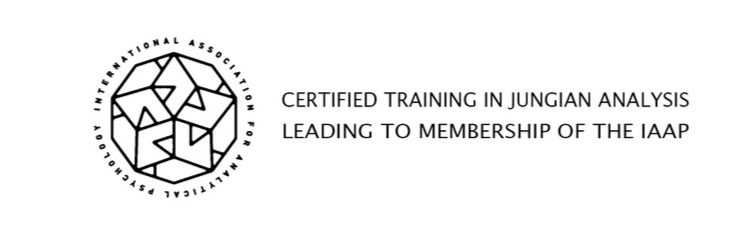
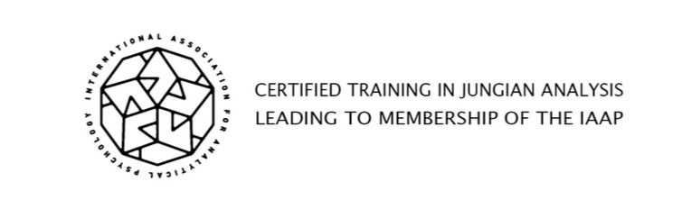

Меня зовут Александра. Я практикующий психолог-сексолог, специализирующийся на теме межличностных отношений между мужчиной и женщиной. Работаю с вопросами эмоциональной близости, сексуальной совместимости, доверия и коммуникации в паре.
Консультирую индивидуально и пары — очно и онлайн. Все обращения строго конфиденциальны. Моя цель — помочь людям восстановить контакт, наладить диалог и построить гармоничные отношения.
Я работаю с темами: конфликты, ревность, эмоциональная дистанция, потребности и ожидания партнёров. Использую современные методы психотерапии, основанные на научных исследованиях и практическом опыте.
Создаю безопасное пространство, где можно открыто говорить о чувствах, страхах и желаниях. Моя задача — не судить, а поддерживать и помогать находить решения.
Обо мне
Я практикующий психолог с опытом работы более 12 лет, сертифицированный специалист в области психологии межличностных отношений. Профессиональное образование получено в Институте К. Г. Юнга (Цюрих Швейцария) , где я прошла углублённую подготовку в рамках юнгианского подхода.
Моя специализация — консультирование в вопросах межличностной динамики: партнёрские отношения, семейные конфликты, трудности во взаимодействии с коллегами, а также индивидуальные внутренние запросы, влияющие на качество общения и личной жизни.
Предоставляю следующие виды психологической помощи:
- Индивидуальные консультации
- Консультации для пар
Форматы работы:
- Очные встречи
- Онлайн-консультации (по видеосвязи)
Работаю строго в рамках профессиональной этики, обеспечивая конфиденциальность, уважение и внимательное отношение к каждому клиенту.
Образование и профессиональное развитие
- Институт К. Г. Юнга — программа подготовки специалистов в области аналитической психологии (сертификация)
- Участник Международного симпозиума психологов в Вене (Австрия)
- Участие в конференциях по психологии отношений:
- «Мужчина и Женщина: диалог в XXI веке»
- «Гендер и психология»
- Участие в авторитетных конференциях и форумах:
- Гендерная психология и психология межличностных отношений
- Руководящие и эмоциональные аспекты взаимоотношений мужчины и женщины
- Современные подходы к консультированию пар и семей
- Дополнительные курсы: работа с травмой, психосоматика, эмоциональные зависимости, личностные границы
Связаться со мной можно через:
- 📞 Viber: +380666796578
- 📧 Telegram: @PsyAlexandra_Odesa
 
